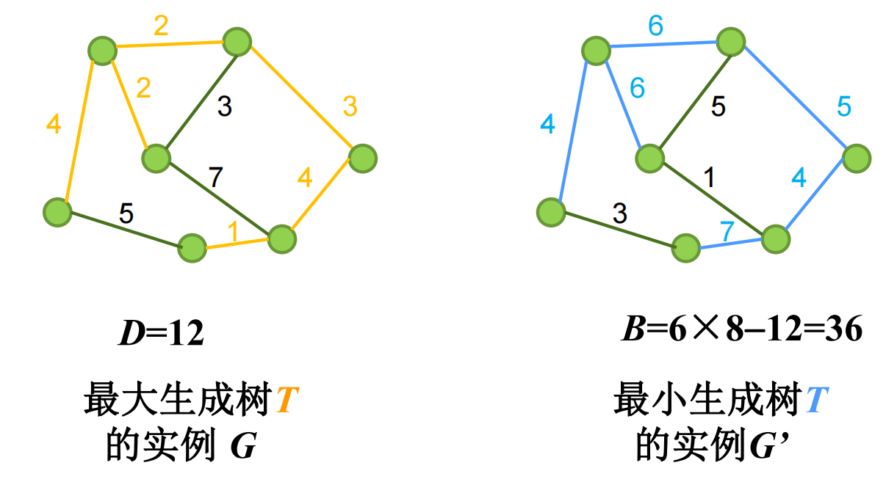
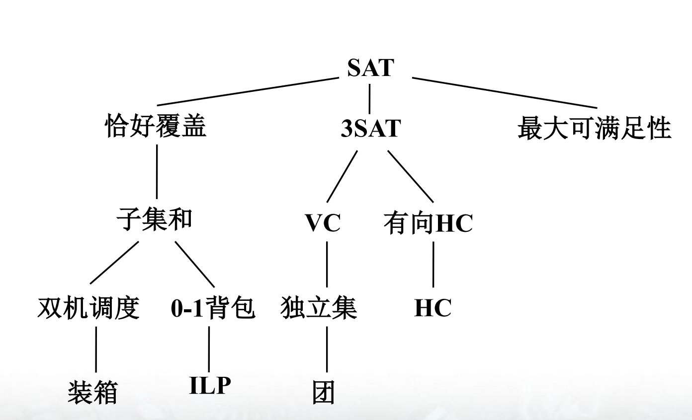
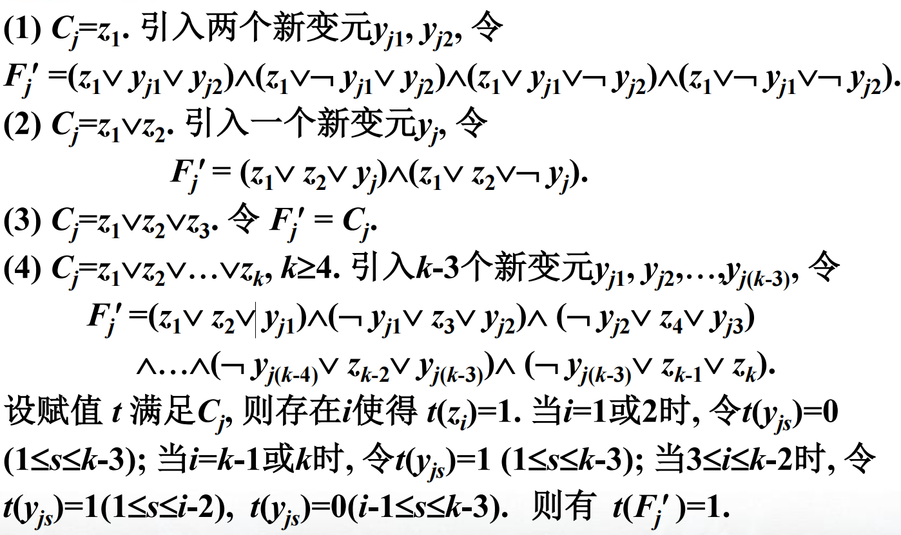
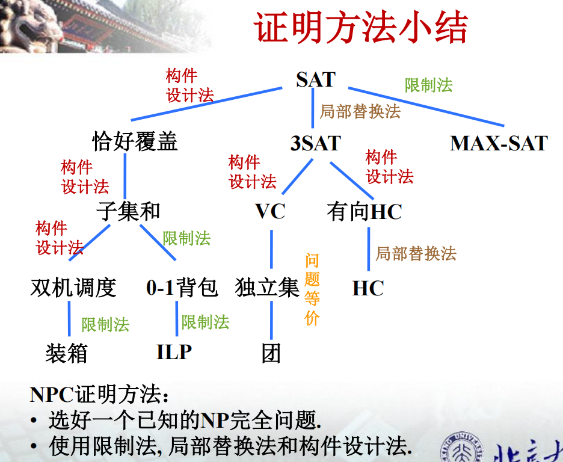

NP完全
本文最后更新于 2026年6月14日 下午
北京大学信息科学技术学院
算法设计与分析(2026春)的课程笔记
第九章：NP完全
和第八章比起来，这一章的抽象程度有过之而无不及，前半段是无数个抽象的定义，后半段则是有限个更抽象的证明，让我们慢慢欣赏~
P类与NP类
易解问题与难解问题
先给出两个函数多项式相关的概念：
设$f$，$g$都为$N \rightarrow N$的函数，若$\exists 多项式p,q$，使得对于所有的$n \in N$，都有$f(n) \leq p(n)$且$g(n) \leq q(n)$，则称$f$和$g$是多项式相关的
例如$nlogn$和$n^2$，$n^2+2n+5$和$n^{10}$是多项式相关
$logn$和$n$，$n^5$和$2^n$则不是多项式相关
接下来我们假设问题为$\Pi$，实例为$I$，用算法$A$求解$I$时，首先要把$I$编码成二进制字符串作为$A$的输入，我们称$I$的二进制编码长度为$I$的规模，记作$|I|$
(对于编码有一些说明，编码时不能故意多使用冗余字符，编码不能采用一进制等等)
如果存在函数$f:N \rightarrow N$，使得对于任意规模为$n$的实例$I$，$A$对$I$的运算在$f(n)$步内停止，则$A$的时间复杂度为$f(n)$
于是有了一些定义~
多项式时间算法: 以多项式为时间复杂度.
易解的问题: 有多项式时间算法
难解的问题: 不存在多项式时间算法
先前我们已经学过了排序、最小生成树、单源最短路径等问题的多项式时间算法，所以他们都是易解问题
现在也已经证明了一些难解问题，有的是完全没法解，有的是有解但无法在多项式时间内解出
但难办的是还有一些问题，既找不到多项式时间算法，又无法证明它们是难解的，如哈密顿回路、货郎、背包问题，下面我们重点讨论的就是这些问题
判定问题
判定问题是指答案只有是或否的问题
形式化来说，判定问题$\Pi$可以定义为有序对$<D_\Pi,Y_\Pi>$，其中$D_\Pi$为$\Pi$所有实例组成的集合，$Y_\Pi \subseteq D_\Pi$ 由所有答案为Yes的实例组成
例如哈密顿回路(HC)：任给无向图G，问G中是否存在HC(一个经过每个顶点恰好一次的回路)，可以定义为$<D_{HC},Y_{HC}>$，其中$D_{HC}$为所有无向图组成的集合，$Y_{HC}$为所有存在HC的无向图组成的集合
显然，如果搜索HC是易解的，那么判定HC也是易解的，反之亦然
货郎问题(TSP)：任给$n$个城市，城市$i$与$j$之间正整数距离为$d(i,j)$，$1 \le i,j \le n$，以及正整数$D$，问是否存在一条每一个城市恰好经过一次且长度不超过$D$的巡回路线，也即是否存在$1,2,…,n$的排列$\sigma$，使得$\Sigma_{i=1}^{n} d(\sigma(i),\sigma(i+1)) \leq D$(其中$\sigma(n+1)=\sigma(1)$)
同理，搜索TSP需要给出一条最短的巡回路线，如果搜索TSP易解，那么判定也是易解，所以TSP的组合优化问题不会比判定TSP问题容易
一般地说，组合优化问题$\Pi^{\ast}$由三部分组成：
- 实例集$D_{\Pi^{\ast}}$
- 对每一个实例$I \in D_{\Pi^{\ast}}$，有一个非空有穷集合$S(I)$，它的元素称为$I$的可行解
- 对每一个可行解$s \in S(I)$，有一个正整数$c(s)$，称为$s$的值
当$\Pi^{\ast}$为最小化问题时，若$s^{\ast} \in S(I)$，使得对于所有$s \in S(I)$，$c(s^{\ast})<c(s)$
则称$s^{\ast}$为$I$的最优解，$c(s^{\ast})$为$I$的最优值，记作$OPT(I)$
(最大化问题同理，感觉这段就是用极为形式化的语言说了一些废话)
$\Pi^{\ast}$对应的判定问题$\Pi=<D_\Pi,Y_\Pi>$则定义如下：
$D_{\Pi}=[(I,K)|I \in D_{\Pi^{\ast}}, K \in Z^{\ast}]$
当$\Pi^{\ast}$为最小化问题时，$Y_{\Pi}=[(I,K)|OPT(I) \le K]$
最大化同理，不等号反向即可
NP类
所有多项式时间可解的判定问题组成的问题类称作 P类
(这里的重点在于必须是判定问题，组合优化问题不属于 P类！)
对于一个判定问题$\Pi=<D_\Pi,Y_\Pi>$，如果存在两个输入变量的多项式时间算法$A$和多项式$p$，使得对于任意实例$I \in D_\Pi$
$I \in Y_\Pi \iff \exists t,|t| \le p(|I|)，且A对输入I,t输出Yes$
则称$\Pi$为多项式时间可验证的,$A$为$\Pi$的多项式时间验证算法
当$I \in Y_\Pi$时，称$t$为$I \in Y_\Pi$的证据
所有多项式时间可验证的判定问题组成的问题类称作 NP类
我们来看，对于HC问题，可以设计如下算法：
任意给出无向图$G$，猜想所有顶点的某个排列，验证该排列是否构成一条HC，若是则回答Yes，否则回答No
当$G$为哈密顿图时，总能猜对一个排列；否则算法就永远回答No
猜想一个排列并检查其是否构成HC可以在多项式时间内完成，故$HC \in NP $
再比如，0-1背包问题：
任给$n$件物品和一个背包，物品$i$的重量为$w_i$，价值$v_i$，$1 \le i \le n$，背包重量限制$B$，目标价值$K$，其中$w_i,v_i,B,K$均为正整数，问是否能在背包中装下总价值不少于$K$且总重量不超过$B$的物品
即是否存在子集$T \subseteq [1,2,…,n]$使得$\Sigma_{i \in T}w_i \le B$且$\Sigma_{i \in T}v_i \ge K$
显然我们能够多项式时间内任意猜想$[1,2,…,n]$的一个子集，并检查其是否满足上述两个不等式，故0-1背包也是NP问题
类似地，最长公共子序列也是NP问题
不难证明，$P \subseteq NP$
现在的问题是$P=NP$吗？
多项式时间变化与NP完全
多项式时间变换
由于对于许多NP问题始终找不到多项式时间算法，但也无法证明就是难解的
我们只能另辟蹊径，如果NP中有难解，那么NP中最难的必为难解
这就牵扯到了比较问题之间的难度
设判定问题$\Pi_1=<D_1,Y_1>$，$\Pi_2=<D_2,Y_2>$，若函数$f:D_1 \rightarrow D_2$满足：
- $f$多项式时间可计算
- 对于所有$I\in D_1$，$I \in Y_1 \iff f(I) \in Y_2$
则称$f$为$\Pi_1$到$\Pi_2$的多项式时间变换
如果存在$\Pi_1$到$\Pi_2$的多项式时间变换，则称$\Pi_1$可多项式时间变换到$\Pi_2$，记作$\Pi_1 \le_p \Pi_2$
例如：$HC \le_p TSP$
规定$HC$到$TSP$的变换$f$，对于$HC$任意实例$I$为无向图$G=<V,E>$,$TSP$对应实例$f(I)$为城市集$V$，任意两个不同的城市$u,v$之间距离
$d(u,v)=1,if (u,v) \in E;else,d(u,v)=2$
界限$D=|V|$
显然$f$是多项式可计算的，$f(I)$中每个城市恰好经过一次的巡回路线有$|V|$条边，每条边长度为1或2，故巡回路线长度$\ge D$
刚好等于D时，每条边长度均为1，刚好等价于存在哈密顿回路，从而得证
又比如：最大生成树 $\le_p$ 最小生成树
这里定义最小生成树：任给连通无向带权图$G=<V,E,W>$，权$W$、界限$B$为正整数，问是否存在权不超过$B$的生成树
最大生成树则是把界限改为$D$，问是否存在权不小于$D$的生成树
任给最大生成树实例$I$：连通无向带权图$G=<V,E,W>$，界限$D$
最小生成树对应实例$f(I)$：$G’=<V,E,W’>$，$B=(n-1)M-D$
其中$n=|V|$，$M=max[W(e)|e \in E]+1$，$W’(e)=M-W(e)$
假设存在$G$生成树$T$，$\Sigma_{e \in T}W(e) \ge D$，则有
$\Sigma_{e \in T}W’(e)=(n-1)M-\Sigma_{e \in T}W(e) \le B$
反之亦然同理，并且$f$显然在多项式时间内可计算，得证
下面是一个变换实例

接下来是关于$\le_p$的各种性质，限于篇幅这里就只列举而不详细证明了
传递性：$\Pi_1 \le_p \Pi_2$，$\Pi_2 \le_p \Pi_3$，则$\Pi_1 \le_p \Pi_3$
$\Pi_1 \le_p \Pi_2$，则$\Pi_2 \in P \rightarrow \Pi_1 \in P$，$\Pi_1$难解 $\rightarrow$ $\Pi_2$难解
由此可见，$\le_p$提供了比较判定问题之间难度的一种方法，这也类似于上一章最后提到的归约
NP完全性及其性质
如果对于所有$\Pi’ \in NP$，$\Pi’ \le_p \Pi$，则称$\Pi$为NP难的
如果$\Pi$为NP难的且$\Pi \in NP$，则称其为NP完全的
由此可见，NP完全问题是NP中最难的问题
于是可以推出，如果存在NP难问题$\Pi \in P$，则$P=NP$
大部分人相信$P=NP$不成立，所以NP完全性很可能是一个问题难解(不属于P)的证据
由$\le_p$的难度比较，若$\Pi’$为NP难，$\Pi’ \le_p \Pi$，那么$\Pi$显然也是NP难
如果同时还有$\Pi,\Pi’ \in NP$，那么$\Pi$就是NP完全的
于是我们得到了证明NP完全非常重要的办法：
- 证明$\Pi \in NP$
- 找到$\Pi’$为NP完全，且$\Pi’ \le_p \Pi$
后面的叙述中我们会把NP完全简称为NPC(NP Complete)
第一个NPC问题：Cook-levin定理
在ai引论中我们学习过命题逻辑，合取范式析取范式等，例如：
$F_1=(\lnot x_1 \land x_2 \land \lnot x_3) \rightarrow (x_1 \land \lnot x_2)$
$F_2=(x_1 \lor x_2) \land (\lnot x_1 \lor x_2 \lor x_3)\land \lnot x_2$
$F_3=(x_1 \lor \lnot x_2 \lor x_3)\land(\lnot x_1 \lor \lnot x_2 \lor x_3)\land x_2 \land \lnot x_3$
这里$F_1$是合式公式，但不是合取范式，$F_2,F_3$都是合取范式
合取范式括号之间用$\land$连接，析取范式则用$\lor$
给定每个变元的真假值称为变元的赋值，如果赋值$t$使得$F$为真，则称$t$为$F$的成真赋值，如果$F$存在成真赋值，称$F$为可满足的
例如令$t(x_1)=t(x_3)=1,t(x_2)=0$，可知$t$为$F_1,F_2$的成真赋值，故$F_1,F_2$都是可满足的，$t$不为$F_3$成真赋值，事实上$F_3$本身就不可满足，找不到解
SAT问题：任给一个合取范式，问它是否是可满足的
Cook-levin定理：SAT是NPC问题，证明过难从略
几个NPC问题
接下来我们会从第一个NPC：SAT问题开始，利用多项式时间变换证明别的NPC，关系如图所示

MAX-SAT和3SAT
设判定问题$\Pi=<D,Y>$,$\Pi’=<D’,Y’>$,如果$D’ \subseteq D$,$Y’=D’\cap Y$,那么$\Pi’$实际上是$\Pi$的特殊情况，称作$\Pi$的子问题
例如HC的一个子问题是：给定一个平面图G，问G是否为哈密顿图
接下来我们看MAX-SAT：任给关于$x_1,x_2,…,x_n$的简单析取范式$C_1,C_2,…,C_m$，问是否存在关于$x_1,x_2,…,x_n$的赋值，使得$C_1,C_2,…,C_m$中至少$K$个为真
当$K=m$时，MAX-SAT就变为了SAT，所以SAT是MAX-SAT的子问题
显然一般情况总会难于特殊情况，如果子问题NP难，那么原问题显然更是NP难
于是我们来证明：MAX-SAT是NPC
显然MAX-SAT$\in $NP，任意猜想一个赋值验证即可
SAT $\le_p$ MAXSAT也是非常容易证明的，从而MAX-SAT是NPC的
下面考虑SAT的一个子问题：3SAT
合取范式中每个简单析取范式恰好三个文字，称为3元合取范式
3SAT：任给一个3元合取范式，问其是否是可满足的
于是我们来证明：3SAT是NPC
由于3SAT为SAT特殊情况，故3SAT$\in $NP
接下来要证明SAT$\le_p$ 3SAT
任给一个合取范式$F$，要构造对应3元合取范式$F’=f(F)$，使得$F$可满足$\iff$$F’$可满足
设$F=\land_{1 \le j \le m}C_j$，$C_j$为简单析取范式
对应$F’=\land_{1 \le j \le m}F’_j$，其中$F’_j$对应$C_j$，为3元合取范式，并且$C_j$可满足$\iff$ $F’_j$可满足
下面我们分情况讨论构造$F’_j$

看上去十分高深，说穿了就是凑数法，如果$C_j$变元少于3个就补上，多于3个就把它平摊，最后用奇妙的办法让赋值结果一样即可
显然该构造可以在多项式时间内完成，故3SAT是NPC得证
这里用到的方法叫做局部替换法，因为此处两个问题的结构非常相似
顶点覆盖、团和独立集
设无向图$G=<V,E>$，$V’ \subseteq V$
如果$G$每一条边都至少有一个顶点在$V’$中，称$V’$为$G$的一个顶点覆盖
如果对于任意$u,v \in V’,u \neq v$都有$(u,v) \in E$，则称$V’$为$G$的一个团
如果对于任意$u,v \in V’$都有$(u,v) \notin E$，则称$V’$为$G$的一个独立集
引理：下列命题等价
- $V’$是$G$顶点覆盖
- $V-V’$是$G$独立集
- $V-V’$是补图$\bar{G}=<V,\bar{E}>$的团
下面我们考虑这样的三个问题：
- 顶点覆盖(VC):正整数$K \le |V|$，问$G$是否存在顶点数不超过$K$的顶点覆盖
- 团：正整数$J \le |V|$，问$G$是否存在顶点数不少于$J$的团
- 独立集：正整数$J \le |V|$，问$G$是否存在顶点数不少于$J$的独立集
显然，这三个问题都属于NP，并且根据引理，很容易将这三个问题通过多项式时间互相变换，所以只需证明其中一个NPC，即可得到另外两个NPC
下面我们证明：VC是NPC问题
首先不难证明VC$\in$NP，任意猜想一个顶点集合验证即可
下面我们证明3SAT$\le_p$VC
ppt中的证明实在过于晦涩难懂，我们这里稍加简化
3SAT中每个变元$x_i$做成两个点$x_i$和$\bar{x_i}$，中间连一条边
顶点覆盖必须在这两个点之中选一个，这相当于给$x_i$赋值
3SAT每个子句都只有三个变元可以做成一个三角形，那么顶点覆盖必须在这个三角形中选两个点，剩下没选的那个点对应的文字，就是子句中为真的那个，最终整个图需要$n+2m$个顶点，其中$n$为变量数，$m$为子句数，这样3SAT有解$\iff$这个图有大小恰好为$n+2m$的顶点覆盖
由于3SAT是NPC，所以VC也是NPC
这里采用的方法称为构件设计法
其他常见NPC问题(了解即可)
有向哈密顿回路：任给有向图，问其中是否存在哈密顿回路
恰好覆盖：是否能用一些彼此不交的子集恰好拼出某个集合
子集和：给定正整数集合，问其是否存在子集，子集之和刚好为某个给定正整数
装箱：知道$n$件物品各自重量，共有$K$个箱子，每只箱子重量上限不超过$B$，问是否能用$K$个箱子装完所有物品
双机调度问题：前面几章有提到过，大概就是两台一样的机器和完全没有先后顺序要求的$n$项作业，问是否能在ddl之前合理分配作业让两台机器做，从而完成所有作业
整数线性规划：$A_{m\times n}$整数矩阵，$b_{m \times 1}$向量，问是否存在$x_{n \times 1}$向量，且$x$的每一维都是正整数，使得$Ax \ge b$
具体证明方法如下，不再一一讨论

从判定问题到优化问题：Turing归约
设$\pi_1,\pi_2$为搜索问题或优化问题，$A$是利用解$\pi_2$的”假想子程序“$s$来解$\pi_1$的算法
只要$s,A$都是多项式时间的，那么我们称
算法$A$是从$\pi_1$到$\pi_2$多项式时间的Turing归约
这时也称$\pi_1$Turing归约到$\pi_2$，记作$\pi_1 \propto_T \pi_2$
本质上相当于只要你多项式时间能解出$\pi_2$，那多项式时间之内$\pi_1$也迎刃而解
显然，多项式变换是特殊的Turing归约
设$\pi$是搜索问题，如果存在NPC问题$\pi’$，$\pi’ \propto_T \pi$，则称$\pi$为NP-hard
这意味着从多项式可计算角度来说，$\pi$至少和NPC问题一样难
许多NPC对应的优化问题都是NP-hard
反之也有许多优化问题可以Turing归约到对应判定问题，称作NP-easy
NP-hard+NP-easy称为NP等价
例如货郎问题的优化问题(给出一条最短的巡回路线)是NP等价的
首先它是NP-hard，这个十分显然，下面我们证明它是NP-easy(能用判定问题黑箱解决)
解法：
- 用二分法猜一个最短长度B*（介于最小可能和最大可能之间）
- 每次调用判定问题的黑箱，问“有没有长度不超过B的路线？”
- 根据答案缩小范围，最后找到B*
- 再一步步构造出具体路线（比如先选第一个城市，再试第二个…）
同样可以证明六个基本NPC问题对应的优化问题都是NP-等价的